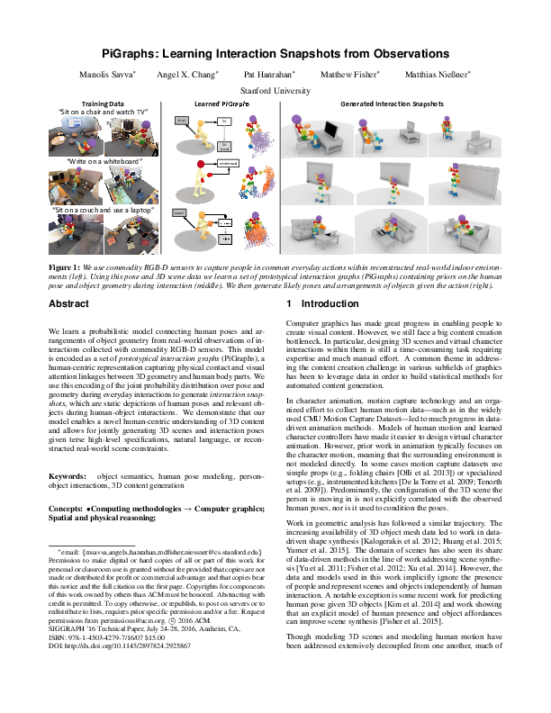

<html><head><meta charset="utf-8"><script src="https://cdn.jsdelivr.net/npm/chart.js@2.8.0"></script>
 <link rel="stylesheet"
       href="http://cdn.jsdelivr.net/gh/highlightjs/cdn-release@9.17.1/build/styles/default.min.css">
 <script src="http://cdn.jsdelivr.net/gh/highlightjs/cdn-release@9.17.1/build/highlight.min.js"></script>
 <script>hljs.initHighlightingOnLoad();</script>
 <link href="../css/all.css" rel="stylesheet">
<link rel="stylesheet" href="../mystyle.css">
<link rel="stylesheet" href="https://cdn.jsdelivr.net/npm/pretty-checkbox@3.0/dist/pretty-checkbox.min.css">
</head>
<body>
 <ul class="publist-inline" style="text-align:left;"><li class="web"><a href="../index.html">< Index</a></ul><h1 class="title">PiGraphs: Learning Interaction Snapshots from Observations <i class="fas fa-circle graphcol0" style="font-size:150%;color:#0868ac;"></i> <i class="fas fa-square graphcol6"  style="font-size:150%;color:#7570b3;"></i></h1><ul class="authors">
<li> Manolis <span class="family">Savva</span></li>
<li> Angel X. <span class="family">Chang</span></li>
<li> Pat <span class="family">Hanrahan</span></li>
<li> Matthew <span class="family">Fisher</span></li>
<li> Matthias <span class="family">Nießner</span></li>
</ul>
<center> SIGGRAPH 2016</center><ul class="publist-inline">
<li class="web"> <i class="fas fa-globe-americas"></i> <a href="https://doi.org/10.1145/2897824.2925867">ACM</a></li>
<li class="pdf"> <i class="far fa-file-pdf"></i> <a href="https://graphics.stanford.edu/projects/pigraphs/pigraphs.pdf">preprint</a></li>
<li class="web"> <i class="fas fa-globe-americas"></i> <a href="https://graphics.stanford.edu/projects/pigraphs/">Project page</a></li>
<li class="web"> <i class="far fa-file-alt"></i> <a href="https://github.com/msavva/pigraphs/">Code</a></li>
<li class="web"> <i class="far fa-file-alt"></i> <a href="http://aspis.cmpt.sfu.ca/falas_datasets/etherion_backup/data/pigraphs/pigraphs.vhd.bz2">Code 2</a></li>
<li class="web"> <i class="fas fa-database"></i> <a href="10.1145-2897824.2925867-metadata.json">DOI Metadata</a></li>
</ul>
<center></img></center>
    <hr>
    <div class="row">
    <div class="column2 chart-container" style="position: relative; height:40vh; width:30vw">
    <canvas width="300" height="250" id="myChart" class="chartjs-render-monitor"></canvas>
    </div>
    <div class="column2"><h2>Informations</h2>
    <ul><li><span class="family">Paper topic</span>: Geometry</li>
<li><span class="family">Nature of the artefact</span>: Code</li>
<li><span class="family">Able to run a replicability test</span>: Yes</li>
<li><span class="family">Replicability score</span>: 5</li>
<li><span class="family">License</span>: MIT</li>
<li><span class="family">Build mechanism</span>: IDE Project (VS,..)</li>
<li><span class="family">Mandatory dependencies</span>:Closed source (e.g. commercial) software or libraries free for research purposes</li>
<li><span class="family">Documentation score</span> {0,1,2}: 2</li>
<li><span class="family">Google Scholar Citation</span> (19/01/2020):   37</li>
<li><span class="family">Reviewer</span>: 2</li>
</ul><h2>Comments</h2><pre>Using the Virtual Machine provided by the authors, everything ultimately worked, and I managed to at least see the interactions. The interface is not documented at all and quite complex though, so I am not sure what I was doing - some buttons make the program crash. Also, beware the licence for Visual Studio in the VM has expired, and since this is not a free Visual Studio version, you need a licence to be able to recompile from the VM (or reinstall free versions of Visual Studio within the VM).

But getting there was a challenge.

First, I tried to compile the code directly on my machine (on Windows, with VS2017 and Java JDK 13.0.1 instead of the old proposed JDK 8). I had to perform an number of steps and fixed a number of issues :


- you need to set the JAVA_HOME environment variable to your java install, e.g., C:\Program Files\Java\jdk-13.0.1\
- you need to add boost to the VS project includes (I tried with boost 1.70.0)
- you need to download mLib and mLibExternal from the provided links and extracted them in the root of pigraphs
- you need to download the 35GB of data.

- in JACE/Integer.cpp line 399, replace  
setJavaJniObject(object); 
by  
setJavaJniObject(object.getJavaJniClass().getClass());
Same thing for Exception.cpp (line 87), Throwable (line 143), IOException (l.90), Collection (l.144), Number (l.100), List (l.200), AbstractList (l.135), AbstractCollection (l.138), ArrayList (l.230), String (l.591 and 612) in their respective files.

- in String.cpp, line 619 replace 
jstring thisString = static_cast<jstring>(static_cast<jobject>(*this));
by 
jstring thisString = static_cast<jstring>(static_cast<jobject>(String(*this)));

- in libsg/core/synth/InteractionScorer.h, add : #include "../ModelInstance.h"  

- in mlibExternal/include/cgal/segment_3.h, lines 101, 104, 107, 110, and 114 replace
  typename cpp11::result_of<typename R::Construct_min_vertex_3(Segment_3)>::type
  by
  typename cpp11::result_of<typename R_::Construct_min_vertex_3(Segment_3)>::type
  
- in mlibExternal/include/cgal/segment_2.h, lines 104, 107, 110, 113, and 116, replace  
  typename cpp11::result_of<typename R::Construct_min_vertex_2( Segment_2)>::type
  by
  typename cpp11::result_of<typename R_::Construct_min_vertex_2( Segment_2)>::type
  
- in libsg/vis/vislog.cpp, line 47, replace 
  m_records.push_back({now, desc, images});
  by 
  m_records.push_back({uint64_t(now), desc, images});
  
- in libsg/core/LabeledGrid.cpp, line 99, replace
    voxels[i] = { coords.x, coords.y, coords.z, label };
	by
	    voxels[i] = { int16_t(coords.x), int16_t(coords.y), int16_t(coords.z), int16_t(label) };

- in mLibExternal/include/Eigen/src/core/util/Macros.h , line 309 replace 
#if defined(_MSC_VER) && (!defined(__INTEL_COMPILER))
by
#if defined(_MSC_VER)  && (_MSC_VER < 1900) && (!defined(__INTEL_COMPILER))

* There is a number of issues due to move constructors overriding copy constructors (the copy constructor thus appears deleted), and similarly for operator-, which can be solved like :
- in JACE/JArray.h, line 445, add a const operator- between iterators (for std::copy to work):
		Iterator operator-(const Iterator &i) const {
#ifdef JACE_CHECK_ARRAYS
			if (current - i.current < 0)
				throw ::jace::JNIException("[JArray::Iterator::operator-] can not rewind iterator out of bounds.");
#endif

			Iterator it(*this);
			it.current -= i.current;
			return it;
		}

- in mLib/include/core-mesh/material.h line 19, add:
Material(const Material& m) = default;
Material& operator=(const Material& m) = default;

- in mlib/include/core-mesh/meshdata.h, line 427, add the following functions:
	MeshData(const MeshData& d) = default;
	MeshData& operator=(const MeshData& d) = default;

* There is a number of issues due to vectors of const objects, which is forbidden since C++11. This can be fixed tediously and with some ugly const_cast:

- in libsg/segmentation/Segmentator.cpp, line 184, replace
vec<SegIndices> Segmentator::segment(const vec<const ml::TriMeshf>& meshes) {
by
vec<SegIndices> Segmentator::segment(const vec<ml::TriMeshf>& meshes) {
and similarly in Segmentator.h line 58.

- in libsg/core/Skeleton.h, line 466, replace 
std::shared_ptr<const Skeleton> m_skel = nullptr;
by
std::shared_ptr<Skeleton> m_skel = nullptr;

and line 404, replace 
explicit TransformedSkeleton(std::shared_ptr<const Skeleton> pSkel,
by
explicit TransformedSkeleton(std::shared_ptr<Skeleton> pSkel,

and line 408, replace 
TransformedSkeleton(const Skeleton& _skel, const ml::mat4f& _transform)
by
TransformedSkeleton(Skeleton& _skel, const ml::mat4f& _transform)

and line 409, replace:
    : m_skel(util::ptr_to_shared<const Skeleton,const Skeleton>(&_skel))
by
    : m_skel(util::ptr_to_shared<Skeleton,Skeleton>(&_skel))
	
- in libsg/core/learningUtil.cpp, line 561, replace
const TransformedSkeleton tSkel(skel, ml::mat4f::identity());
by
const TransformedSkeleton tSkel(const_cast<Skeleton&>(skel), ml::mat4f::identity());

- in libsg/interaction/InteractionSet.cpp, line 168, replace 
TransformedSkeleton normalizedSkeleton(s, xform);
by
TransformedSkeleton normalizedSkeleton(const_cast<Skeleton&>(s), xform);

- in libsg/core/learningUtil.cpp, line 115, replace
tSkels.push_back(TransformedSkeleton(*skelInter.first, ml::mat4f::identity()));
by
tSkels.push_back(TransformedSkeleton(const_cast<Skeleton&>(*skelInter.first), ml::mat4f::identity()));

- in libsg/core/learningUtil.cpp, line 135, replace
      return std::make_pair(TransformedSkeleton(*x.first.getOriginalSkeleton(), perturbation), Dataset<TransformedSkeleton>::Label_NEG);
by
      return std::make_pair(TransformedSkeleton(const_cast<Skeleton&>(*x.first.getOriginalSkeleton()), perturbation), Dataset<TransformedSkeleton>::Label_NEG);
	  
	 
- in libsg/core/learningUtil.cpp, line 158, replace
      tSkels.push_back(TransformedSkeleton(*skelInter.first, ml::mat4f::identity()));
 by
	  tSkels.push_back(TransformedSkeleton(const_cast<Skeleton&>(*skelInter.first), ml::mat4f::identity()));
  
- in libsg/interaction/InteractionSet.cpp, line 93, replace
        sampledSkeletons.emplace_back(s, xform);
by
        sampledSkeletons.emplace_back(const_cast<Skeleton&>(s), xform);		
		
- in core/synth/SkeletonPoser.cpp line 452, replace:
 std::shared_ptr<const Skeleton> pSkel = std::make_shared<const Skeleton>(p.first);
by
 std::shared_ptr<Skeleton> pSkel = std::make_shared<Skeleton>(p.first);
  
- in libsg/core/Database.h, line 24, replace
typedef map<const Skeleton*, vec<const InteractionRecord>> SkeletonToInteractionsMap;
by
typedef map<const Skeleton*, vec<InteractionRecord>> SkeletonToInteractionsMap;

- in libsg/interaction/InteractionMap.h, line 56, replace:
const Skeleton modelSkel = core::TransformedSkeleton(skel, worldToModelML).getSkeleton();
by
const Skeleton modelSkel = core::TransformedSkeleton(const_cast<Skeleton&>(skel), worldToModelML).getSkeleton();

* You need to install DirectX 10 with the proposed link. However, first you need to uninstall Visual C++ 2010 x86 and x64 redistribuables from Windows otherwise the install fails.

* At this point, the C++ code compile. But I got stuck to in the instructions for the Java part, as the explanations are very limited, and require knowledge of ANT, JavaApps, SceneGrok, Jace, WekaUtil, IntelliJ IDEA, and Maven. I know none of them, and the informations provided are not sufficient to build the project. This is apparently a known issue ( https://github.com/msavva/pigraphs/issues/5 ).

* I falled back to installing the VM. The VM is a 70GB bz2 file, and is stored on a moderately fast server (it took me about 34 hours to download the VM with a fast connection ; this is about 600KB/s). I thought the file was corrupted as 7zip could not extract it, so I downloaded the VM 3 times in total, with 2 different computers and internet connections. It happens that 7zip just cannot extract such big files, but bzip2 can.

Finally, to run the VirtualBox, you need to deactivate Hyper-V and the Ubuntu for Windows feature, otherwise VirtualBox produces an error.</pre>
    </div>
    </div>
        <script>

          var ctx = document.getElementById('myChart');
          var myChart = new Chart(ctx, {
              type: 'radar',
              data: {
    labels: ['Dependencies', 'Build / Configure', 'Fixing bugs', 'Easy to adapt', 'Can replicate paper results'],
                     datasets: [{
                      label: 'Build/Run Experience (the higher, the better,  {1..5}, 0=N/A )',
                      backgroundColor: 'rgba(54, 162, 235, 0.3)',
                      borderColor: 'rgb(54, 162, 235)',
                      data: [1,2,1,3,5]
                  }]
              },
              options: {
  scale: {
      ticks: {
          suggestedMin: 0,
          suggestedMax: 5,
          stepSize: 1
      }
  }
}
          });


        </script>
    <br><br>
<br><br><ul class="publist-inline" style="text-align:left;font-size:110%"><li > <i ></i> <a href="replicability.json">Download complete data for this entry</a></li></ul></code></pre></body></html>